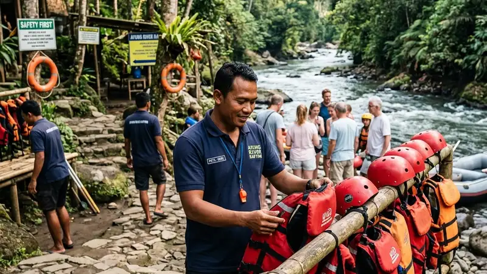

Cara memilih jasa rafting di Malang yang aman meliputi pengecekan kelengkapan alat keselamatan, kualifikasi pemandu, serta reputasi operator melalui ulasan peserta sebelumnya. Ketiga aspek ini menjadi dasar utama sebelum memutuskan booking.
- Alat keselamatan standar wajib tersedia dan dalam kondisi layak pakai.
- Pemandu berpengalaman biasanya memahami karakter jalur dan titik rawan sungai.
- Ulasan dan testimoni peserta sebelumnya dapat menjadi indikator kualitas layanan.
- Kejelasan informasi paket membantu menghindari biaya tersembunyi.
- Briefing keselamatan yang menyeluruh menunjukkan komitmen operator terhadap keamanan peserta.
Apa Ciri Penyedia Jasa Rafting di Malang yang Aman?
Ciri penyedia jasa rafting di Malang yang aman dapat dilihat dari kelengkapan alat pelindung diri seperti pelampung, helm, dan tali pengaman, serta keberadaan pemandu yang mendampingi langsung di dalam perahu. Operator yang memperhatikan keselamatan biasanya juga melakukan pengecekan alat secara rutin sebelum digunakan.
Selain itu, operator yang transparan biasanya bersedia menjelaskan tingkat kesulitan jalur, potensi risiko, dan prosedur darurat kepada peserta sebelum aktivitas dimulai, bukan hanya berfokus pada promosi paket.
Apa yang Harus Ditanyakan Sebelum Memesan Jasa Rafting?
Sebelum memesan, calon peserta sebaiknya menanyakan jumlah pemandu per perahu, jenis alat keselamatan yang disediakan, prosedur jika terjadi kondisi darurat, serta apakah tersedia asuransi kecelakaan bagi peserta. Pertanyaan-pertanyaan ini membantu memastikan operator memiliki standar operasional yang jelas.
Pertanyaan lain yang tidak kalah penting adalah mengenai batas usia, kondisi kesehatan yang dipersyaratkan, dan apakah jalur yang ditawarkan sesuai dengan kemampuan fisik peserta, terutama bagi rombongan dengan anggota berusia anak-anak atau lansia.
Bagaimana Cara Mengecek Reputasi Operator Rafting di Malang?
Reputasi operator rafting di Malang dapat dicek melalui ulasan daring, testimoni komunitas, maupun rekomendasi dari peserta yang pernah menggunakan jasa tersebut sebelumnya. Konsistensi ulasan positif dalam jangka waktu tertentu biasanya mencerminkan kualitas layanan yang stabil.
Menghubungi langsung pihak operator untuk menanyakan detail operasional, seperti lama pengalaman menangani rombongan atau jumlah pemandu bersertifikasi, juga dapat membantu menilai profesionalisme sebelum melakukan pemesanan.
Apa Perbedaan Operator Berpengalaman dan Operator Baru?
Operator berpengalaman umumnya sudah memahami karakteristik jalur sungai secara detail, termasuk titik-titik jeram yang membutuhkan perhatian ekstra, sementara operator yang baru beroperasi mungkin masih dalam tahap membangun standar prosedur dan pengalaman lapangan.
Hal ini bukan berarti operator baru pasti kurang aman, namun peserta perlu memastikan operator tersebut tetap memenuhi standar keselamatan dasar, termasuk pemandu yang memiliki pelatihan memadai meski usia usahanya masih relatif muda.
Kesalahan yang Perlu Dihindari Saat Memilih Operator
Kesalahan yang sering terjadi adalah memilih operator hanya berdasarkan harga termurah tanpa mengecek standar keselamatan, atau tidak membaca ketentuan pembatalan dan kebijakan cuaca sebelum memesan. Kondisi ini dapat menimbulkan kekecewaan apabila jadwal berubah mendadak akibat cuaca ekstrem.
FAQ
Apakah semua operator rafting di Malang menyediakan pelampung dan helm?
Sebagian besar operator menyediakan pelampung dan helm sebagai standar dasar, namun sebaiknya tetap dikonfirmasi langsung sebelum memesan.
Bagaimana jika cuaca buruk saat jadwal rafting sudah ditentukan?
Operator yang bertanggung jawab biasanya memiliki kebijakan penundaan atau pembatalan demi keselamatan peserta saat kondisi cuaca dinilai tidak mendukung.
Apakah perlu pengalaman sebelumnya untuk mengikuti rafting di Malang?
Pengalaman sebelumnya tidak selalu diperlukan, terutama untuk jalur dengan tingkat kesulitan rendah yang dirancang khusus untuk pemula.
Arya
penulis artikel yang sudah berpengalaman di dalam dunia wisata outbound Batu Malang.